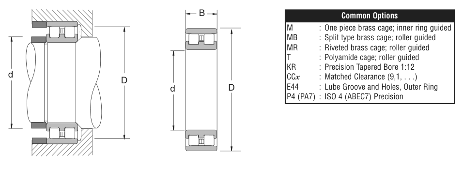

Original catalogue drawing - NSK catalogue, page 221

Scanned from the manufacturer catalogue page listing this part number. All part numbers printed on that table share the same drawing.
Scale cross-section
Blue = inner / outer ring, yellow = rolling element. Drawn to scale from this part's own
dimensions for selection reference only - not a manufacturing or assembly drawing.
Dimension table (mm / inch)
Symbol
Dimension
mm
inch
d
Bore diameter
130
5.1181
D
Outside diameter
200
7.874
B
Inner-ring / bearing width
52
2.0472
Notes
Weights are given in kg. Load ratings are shown in both the original catalogue units and the converted value (1 N = 0.2248 lbf). Data is provided for selection reference only - confirm against the latest official catalogue before ordering.
Main dimensions
Bore d (mm)
130
Bore d (in)
5.1181
Outside dia. D (mm)
200
Outside dia. D (in)
7.8740
Width B (mm)
52
Width B (in)
2.0472
Load ratings & speeds
Basic dynamic load rating Cr (lbs)
64000
Basic static load rating Cor (lbs)
107000
Limiting speed - grease (rpm)
4,300
Limiting speed - oil (rpm)
4,800
Weight
Weight (kg)
5.838
Mounting dimensions (fillets / shoulders)
Fillet ra (in)
0.0787
Shaft shoulder da min (in)
7.5197
Shaft shoulder da (in)
5.4724
Housing shoulder Db (in)
7.2835
Bearing life (ISO 281 basic rating life)
C / P
Equivalent load P (N)
L10 (106 rev)
L10h at 1,400 rpm
4
71,172
64
762
6
47,448
216
2,571
8
35,586
512
6,095
10
28,469
1,000
11,905
15
18,979
3,375
40,179
Basic rating life per ISO 281: L10 = (C/P)3 with C = 284,686 N. Hours = L10 x 106 / (60n). Life-modification factors for lubrication, contamination and temperature (aISO) are not included.
Source & traceability
Brand
NSK
Source catalogue
NSK inch product catalogue
Catalogue page
p.223 (dimensions) / p.224 (ratings)
Dimensions in inches and millimetres, load ratings in lbs.
Send us the quantity you need and we will come back with price and
lead time, normally within 24 hours. Equivalent parts from other brands can be quoted at the same time.